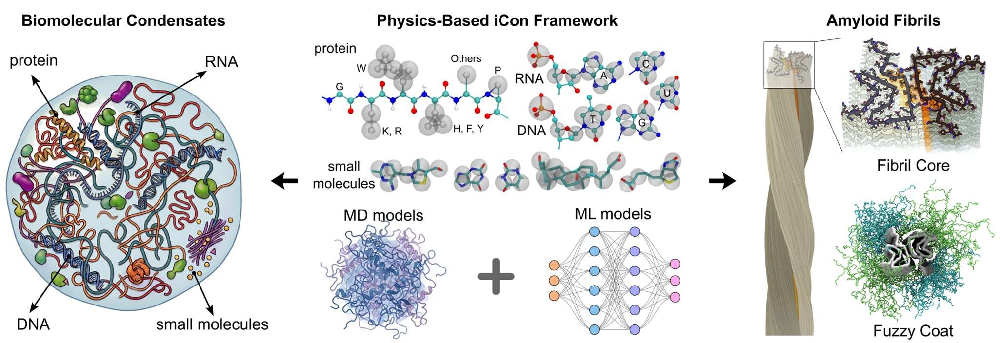

Research
Organization of biomolecules and polymers across scales
How biomolecules and polymers organize, from the formation of large molecular complexes to collective behaviors such as self-assembly, phase separation, and aggregation, underlies both cellular function and the design of new materials. My research develops physics-based computational models that bridge molecular detail and mesoscale behavior, and uses them, together with experiments, to understand and predict how this organization emerges in living and synthetic systems.
At the core of this work are intermediate-resolution models that are accurate enough to capture the molecular features that matter for biology, yet efficient enough to reach the length and time scales where large complexes, condensates, and aggregates form: HyRes for proteins, iCon models for RNA and DNA, and models for small molecules, integrated into a single framework for simulating complex biomolecular mixtures at near-cellular scale. I use these models to study how the sequence, structure, and interactions of proteins and nucleic acids govern the formation, material properties, and aging of biomolecular condensates, and how the disordered fuzzy coats of amyloid fibrils shape fibril stability and interactions in neurodegenerative disease.
The same physics governs synthetic materials, and my earlier work established a simulation framework for the self-assembly of alternating copolymers. Throughout, I work closely with experimental labs, and I share the models, tools, and simulation data openly with the community.
